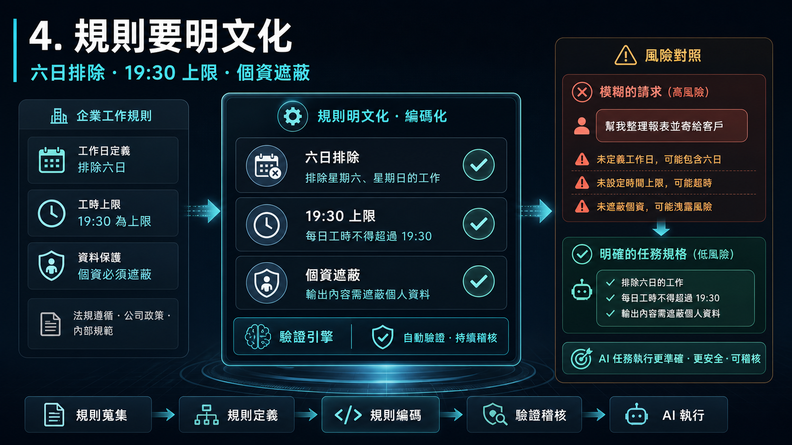
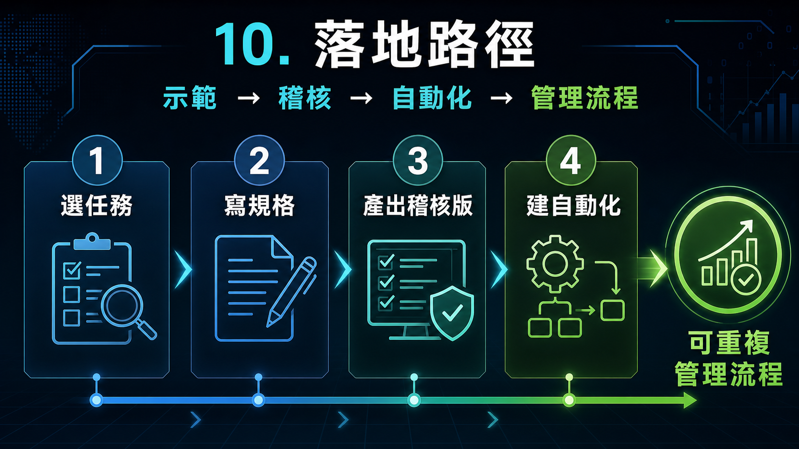

這一頁以 excel-auto-codex 子專案為案例，說明台南在地公司員工、主管與 AI 導入決策者，如何把日常辦公中的 Excel 整理問題，轉化成 AI 可以協助完成、驗證與重複使用的工作流程。案例核心是員工出勤資料：原始活頁簿採區段式報表格式，目標是依照明確規則計算每位員工每月的工作天數與工作總時數，並保護員工姓名與編號。[problem]
此外，日期可能以文字儲存，例如 2026/06/08；上班與下班欄位也可能混入文字註記，例如 遲到08:25、早退15:39、病假12:23。同一位員工同一天還可能有多筆紀錄，因此工作天數不能重複計算，但工時仍可能需要分段加總。這些特徵讓本案例成為很好的辦公 AI 導入範例：它不是單一公式問題，而是資料清理、規則套用與結果驗證的組合。[problem]
4. 規則要明文化

4. 規則要明文化
AI 是否能產出可用結果，取決於業務規則是否被明確告知。本案例的規則包含：星期六與星期日不計入工作天數與工作總時數；下班晚於 19:30 時只算到 19:30；上班或下班空白時不計入工時；同一員工同一天只計一次工作天數；同一天多筆有效紀錄的工時可以加總；員工姓名與編號必須馬賽克。[problem]
這些規則如果只存在於資深同仁腦中，就很難交給 AI、也很難交接給新人。導入 AI 的重要工作之一，是把隱性的作業知識寫成可檢查的規格。當規則被明文化後，不論最後採用純 Excel 公式或 Python 自動化，都能用同一組驗收條件檢查結果是否正確。[results]
主管與決策者在評估 AI 導入時，可以優先尋找這類工作：每月或每週重複發生、規則明確但人工處理繁瑣、原始資料格式不完美但結構大致固定、結果需要彙總檢查與留存，而且錯誤會造成管理或溝通成本。本案例符合這些條件，因此適合作為公司內部 AI 辦公導入的示範案例。
本案例能對應的管理價值包括減少人工整理時間、降低公式錯誤與漏算風險、建立標準化驗收規則、保留可追蹤計算明細，以及推動部門知識文件化。決策者不一定要要求每位員工都會寫程式，而是要建立一套方法，讓員工能把問題交代清楚，讓 AI 產出可驗證成果，再由主管決定哪些流程值得進一步標準化或自動化。[analysis]
10. 落地路徑

10. 落地路徑
建議的落地方式，是從低風險、高重複性的辦公任務開始，例如出勤彙總、報表整理、名單比對、費用分類或月報初稿。第一步先要求員工用固定格式描述任務，包含資料來源、處理規則、例外情況、輸出格式、驗收條件、個資與權限限制。這能把人的經驗整理成 AI 可以執行的規格。
第二步先產出可人工稽核的版本，例如純 Excel 公式版或含計算明細的輸出檔。當某項任務被證明會重複發生、規則穩定且驗收方式明確時，再進一步建立自動化流程，保留輸入檔、輸出檔與稽核用計算明細。最終目標不是讓 AI 取代員工，而是讓員工把日常辦公經驗變成可重複、可檢查、可管理的公司流程。[analysis]